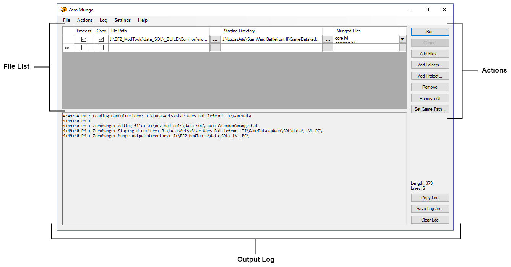

User Interface: Overview

- File List – The File List drives the core functionality of Zero Munge. It contains a list of files to execute, the order in which to execute them, where to copy munged files, which munged files to copy, and so on.
- Actions – The buttons in the Actions list perform various operations that relate to the File List.
- Output Log – The controls in this section pertain to the Output Log, which displays the processed files' text output in real-time.
Related Pages